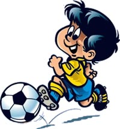

Фізичне виховання
Однією з найважливіших передумов гармонійності, повноцінного життя, самореалізації особистості є її здоров'я. Недаремно досі не втратило своєї значущості давнє латинське прислів'я «Здоровий дух у здоровому тілі». Саме на формування здорової, фізично повноцінної особистості спрямоване фізичне виховання..
Фізичне виховання — система соціально-педагогічних заходів, спрямована на зміцнення здоров'я та загартовування організму, гармонійний розвиток функцій і фізичних можливостей людини, формування життєво важливих рухових навичок та вмінь..
Реалізується фізичне виховання в єдності з розумовим, моральним, трудовим, естетичним вихованням..
Завдання і зміст фізичного виховання.
Фізичне виховання має своєю метою зміцнення здоров'я і загартовування організму молодої людини, сприяння фізичному розвитку та підвищенню працездатності. Конкретно фізичне виховання спрямоване на формування, вдосконалення рухових якостей (швидкості, сили, витривалості, гнучкості, спритності), стійкого інтересу до систематичних занять фізичними вправами, прищеплення гігієнічних навичок..
Шкільна програма з фізичного виховання визначає його зміст:
- теоретичні відомості із загальної гігієни та гігієни фізичних вправ, необхідні для самостійних занять фізичними вправами;
- гімнастичні вправи, що сприяють загальному фізичному розвитку учнів;
- легка атлетика;
- рухливі ігри, розраховані на розвиток в учнів кмітливості, спритності, швидкості дій, виховання колективізму, дисциплінованості;
- спортивні ігри;
У фізичному вихованні використовують фізичні, природні та гігієнічні чинники.
До фізичних відносять спеціально організовані й свідомо виконувані рухові дії (гімнастику, ігри, туризм). Останнім часом набули популярності різні системи єдиноборств — як українські, коріння яких сягає козацької доби, так і східні..
Природні чинники — це сонце, повітря, вода, що посилюють оздоровчий вплив фізичних вправ на учнів..
До гігієнічних чинників належать гігієнічне забезпечення фізкультурних занять, раціональний режим навчальної праці, відпочинку, харчування, сну та ін.